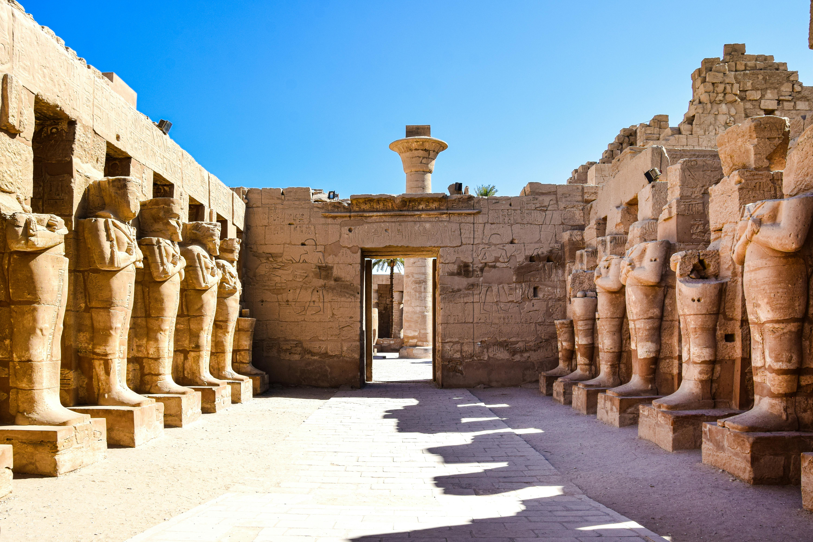
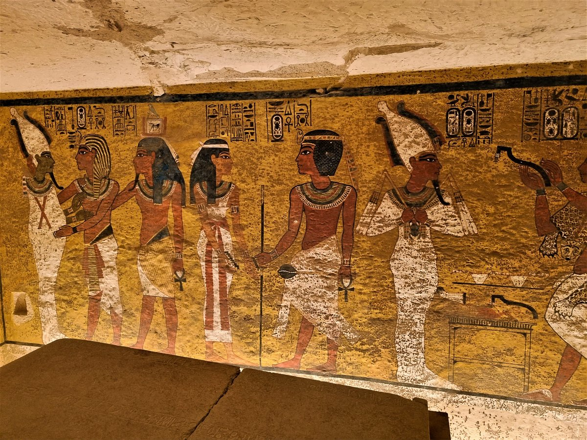

Luxor
Luxor has frequently been characterized as the "world's greatest open-air museum"
, as the ruins of the Egyptian temple complexes at Karnak and Luxor stand within
the modern city. Immediately opposite, across the River Nile, lie the monuments,
temples and tombs of the west bank Theban Necropolis, which includes the Valley
of the Kings and Valley of the Queens. Thousands of tourists from all around the
world arrive annually to visit Luxor's monuments and to know about the Pharos
which are the builders of the most incredible civilization,Luxor[a] is a city
in Upper Egypt, which includes the site of the Ancient Egyptian city of Thebes.
Luxor had a population of 1,333,309 in 2020,[2] with an area of approximately 417 km2 (161 sq mi)[1] and
is the capital of the Luxor Governorate. It is among the oldest inhabited cities in the world.

The origin of civilization
Here you will know the achievements of our Egyptian nation.

Valley of the Kings
This desert valley contains the ancient burial ground of many Egyptian pharaohs.
Among over 60 royal tombs is the famous Tomb of Tutankhamen that was found in pristine condition.

Luxor Temple
A temple is a large Ancient Egyptian temple complex located on the east bank of
the Nile River in the city, The temple built for the ritual practices exercised at the most important Ancient Egyptian
festival, The Festival of Opet.

Temple of Hatshepsut
A mortuary temple dedicated to the longest ruling female of Ancient Egypt,
Queen Hatshepsut. The temple is decorated with statues, sphinxes, and reliefs,
which have been meticulously restored over time.

Tomb of King Tutankhamun
The tomb of King Tut was discovered in the Valley of the Kings in 1922
by Howard Carter and Lord Carnarvon.The tomb consists of four chambers and an
entrance staircase and corridor

Tomb of Queen Nefertari
Nefertari, which means "beautiful companion", was Ramesses II's favorite wife.
In the Valley of the Queens, Nefertari's tomb once held the mummified body and
representative symbolisms of her, consistent with most Egyptian tombs of the period

Alkarnak temple
The complex is a vast open site and includes the Karnak Open Air Museum. It is believed to
be the second most visited historical site in Egypt.It consists of four main parts,
of which only the largest is currently open to the public.